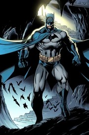

Personagem

Batman (inicialmente chamado o Bat-Man) também conhecido pelas alcunhas Homem-Morcego, Cavaleiro das
Trevas, Cruzado Encapuzado, Maior Detetive do Mundo, é um personagem fictício e super-herói encapuçado
da editora norte-americana DC Comics, criado pelo desenhista Bob Kane e pelo escritor Bill Finger,
aparecendo pela primeira vez na história em quadrinhos Detective Comics#27 (maio de 1939) com o nome "o
Bat-Man". A identidade secreta do Batman é Bruce Wayne, um bilionário americano, playboy, magnata de
negócios, filantropo e dono da corporação Wayne Enterprises. Depois de testemunhar o assassinato dos seus
pais enquanto criança, Wayne jurou vingança contra os criminosos — um juramento moderado por um ideal
justiça. Wayne, então, treina física e intelectualmente e cria um herói inspirada no morcego, seu maior
medo de infância para combater o crime.
Curiosidades
- O nome Bruce Wayne tem uma origem mais simbólica. Na realidade existe um fato bem interessante relacionado
com a origem deste icônico nome. O primeiro nome “Bruce” foi baseado no Rei Bruce da Escócia, já o último
foi inspirado em Anthony Wayne, um herói da revolução norte-americana.
- Batman nem sempre tinha um código moral de nunca matar. Pois durante a década de 30 ele chegou a matar um
montão de criminosos nos quadrinhos. Foi provavelmente aqui que Zack Snyder encontrou a inspiração para a
sua versão do Batman em Batman v Superman.
- Durante um dos raros crossovers entre personagens da Marvel e da DC Comics, foi criado um personagem
chamado Garra das Trevas. Este personagem era basicamente uma mistura entre o o Batman e o Wolverine. Quando
ele não estava utilizando o seu disfarce, o herói respondia pelo nome de Logan Wayne.
- De início, o personagem Robin teria apenas uma participação especial na HQ Detective Comics 38, em 1940.
Mas a edição vendeu tanto que ele se tornou frequente nas histórias.
- Até agora, o personagem já foi interpretado por seis atores diferentes no cinema: Michael Keaton (em 1989
e 1992), Val Kilmer (1995), George Clooney (1997), Christian Bale (2005, 2008 e 2012), Ben Affleck (2016
e 2017) e Robert Pattinson (2022).
- Batman é um dos membros fundadores da Liga da Justiça, que apareceu pela primeira vez em uma história no ano
de 1960. Entre os membros, destacam-se também o Super-Homem, Mulher Maravilha, Lanterna Verde, Aquaman, Flash,
Caçador de Marte e Ciborgue.